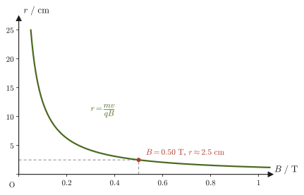

Chapter 39Magnetic Forces on Currents and Charged Particles — The Lorentz Force and the Hall Effect
When a wire carrying a current is placed between the poles of a U-shaped magnet, the wire suddenly moves—an experiment that everyone sees at least once in a junior high or high school science room. The turning of a motor and the vibration of a speaker cone that produces sound all rest on the phenomenon that “a magnetic field exerts a force on a current.” In the previous chapter (Chapter 38) we studied the side of the story in which a current creates a magnetic field (the Biot–Savart law and Ampère's law). In this chapter, conversely, we treat the side in which an already existing magnetic field exerts a force on currents and on moving charged particles—the Ampère force and the Lorentz force.
First we define the force on a straight current in a magnetic field (the Ampère force) using the cross product, and from that definition we derive concretely, all the way to numerical values, the phenomenon in which two parallel wires attract or repel each other. Next we introduce the force on a single charged particle moving in a magnetic field (the Lorentz force), and confirm that it is “essentially the same thing” as the Ampère force by adding up the forces on the free electrons in a wire one by one. This is a good example of a structure that often appears in physics: a macroscopic law (the Ampère force) can be understood as an accumulation of a microscopic law (the Lorentz force).
As applications of the Lorentz force, we learn that a charged particle entering perpendicular to a uniform magnetic field undergoes uniform circular motion (cyclotron motion), and that a particle entering obliquely to the field follows a helical motion (the principle of the aurora). We then study the Hall effect, in which a voltage appears perpendicular to both the current and the magnetic field when a current-carrying conductor is placed in a magnetic field. The Hall effect is a powerful means of telling whether the carriers (the particles that carry the current) in a semiconductor are electrons or holes, and of measuring their density as well; it is widely used in materials science and engineering, for example in the magnetic sensors of smartphones and in detecting the rotation of motors.
- The definition of the Ampère force $\bm F=I\bm\ell\times\bm B$, how to find its direction using the right hand, its magnitude $|\bm F|=I\ell B\sin\theta$, and its relation to Fleming's left-hand rule from high school
- Derivation of the magnitude of the force between two parallel straight currents, $F/\ell=\mu_0I_1I_2/(2\pi a)$, and confirmation that the force is attractive for currents in the same direction and repulsive for currents in opposite directions (and the relation to the historical definition of the ampere)
- A qualitative understanding of how a magnetic field exerts a force on a current, in the picture of the overlapping and bending of magnetic field lines
- The definition of the Lorentz force $\bm F=q\bm v\times\bm B$, and the fact that the Ampère force can be rewritten as the sum of the Lorentz forces acting on the individual free electrons in the wire (the link between the micro and the macro)
- Circular motion in a uniform magnetic field (radius $r=mv/(qB)$, period $T=2\pi m/(qB)$, cyclotron angular frequency $\omega_{\mathrm c}=qB/m$, and cyclotron frequency $f_{\mathrm c}=qB/(2\pi m)$), and helical motion for oblique incidence
- Derivation of the Hall voltage $V_{\mathrm H}=IB/(nqt)$ and the Hall coefficient $R_{\mathrm H}=1/(nq)$, determining the type of carrier (electron or hole) from the sign of the Hall voltage, measuring the carrier density of a semiconductor, and the application to Hall sensors
Source notes: Yasuhide Mochizuki, Physics Notes: Electromagnetism, pp. 21–25 (p. 26 is blank).
39.1 The Ampère Force — The Force on a Current in a Magnetic Field
Consider the case in which a straight wire is placed in a magnetic field of magnetic flux density $\bm B\ [\mathrm{T}]$ (the tesla; $1\ \mathrm T=1\ \mathrm{Wb/m^2}=1\ \mathrm{kg/(A\,s^2)}$) and a current flows through it. Let the length of the wire be $\ell\ [\mathrm m]$ and the magnitude of the current $I\ [\mathrm A]$. As in the experiment at the beginning, a force acts on a current in a magnetic field. This force is called the Ampère force or the electromagnetic force.
Caution: How to represent the direction of the wire
A current has a direction, but the magnitude $I$ of the current itself is a scalar (as we saw in Section 37.1, the current is the quantity of electric charge passing through a cross section per unit time, and is not a quantity that has a direction). So we represent “an arrow of length $\ell$ drawn along the wire in the direction of the current” by the boldface vector $\bm\ell$. The direction of $\bm\ell$ is the direction of the current, and its magnitude $|\bm\ell|=\ell$ is the length of the wire. With this convention, $I\bm\ell$ (the product of the scalar $I$ and the vector $\bm\ell$) is a single vector with “magnitude $I\ell$ and the direction of the current.” Below we write equations using this $I\bm\ell$.
Definition 39.1: Ampère force
When a current $I$ flows through a straight wire of length $\ell$ in a uniform magnetic field of magnetic flux density $\bm B$, the force $\bm F$ acting on the wire is called the Ampère force and is defined by
\begin{equation} \bm F=I\bm\ell\times\bm B \label{eq:39-ampere-def} \end{equation}(where $\bm\ell$ is a vector of magnitude $\ell$ pointing in the direction of the current). From the definition of the cross product $\times$ (University Mathematics, Section 15.3), the direction of $\bm F$ is perpendicular to both $\bm\ell$ and $\bm B$, and is the direction in which a right-handed screw advances when turned from $\bm\ell$ toward $\bm B$ (Figure 39.1). Also, from the property of the cross product $|\bm a\times\bm b|=|\bm a||\bm b|\sin\theta$ ($\theta$ is the angle between the two vectors), the magnitude of the Ampère force, with $\theta$ the angle between $\bm\ell$ and $\bm B$, is
\begin{equation} |\bm F|=I\ell B\sin\theta \label{eq:39-ampere-mag} \end{equation}(Figure 39.2). When the wire is parallel ($\theta=0$) or antiparallel ($\theta=180^\circ$) to the magnetic field, $\sin\theta=0$ and no force acts. The force is largest when the wire is perpendicular to the magnetic field ($\theta=90^\circ$).
When the magnetic field varies from place to place or the wire is curved, divide the wire into sufficiently short pieces $\dd\bm\ell$ and add up (integrate) the forces $\dd\bm F=I\,\dd\bm\ell\times\bm B$ acting on the pieces. Eq. \eqref{eq:39-ampere-def} is this procedure applied to a straight wire in a uniform magnetic field (Example 39.2).
Caution: Relation to Fleming's left-hand rule in high school
In high school, the direction of the force on a current in a magnetic field was found by “Fleming's left-hand rule” (when the middle finger of the left hand is aligned with the current $I$ and the index finger with the direction of the magnetic field $\bm B$, the thumb points in the direction of the force $\bm F$), and the magnitude was remembered as $F=IB\ell$ (for a wire perpendicular to the field). Eq. \eqref{eq:39-ampere-def} of this chapter combines these two into one. The direction given by the left-hand rule is exactly the same as the direction found with the right hand, “the direction in which a right-handed screw advances when turned from $I$ to $B$” (the cross product $I\bm\ell\times\bm B$; we verify this in Exercise 39.2), and the magnitude $F=IB\ell$ is Eq. \eqref{eq:39-ampere-mag} with $\theta=90^\circ$. With the cross product, the magnitude for a wire crossing the field obliquely (where $\sin\theta$ enters) and the extension to curved wires can also be handled in a single equation.
Example 39.1: Magnitude of the Ampère force
A straight wire of length $\ell=0.80\ \mathrm m$ is placed in a uniform magnetic field of magnetic flux density $B=0.25\ \mathrm T$, and a current $I=4.0\ \mathrm A$ flows through it. Find the magnitude of the Ampère force (a) when the wire is perpendicular to the magnetic field, and (b) when the angle between the wire and the magnetic field is $30^\circ$.
Solution. We use Eq. \eqref{eq:39-ampere-mag}, $|\bm F|=I\ell B\sin\theta$.
(a) For $\theta=90^\circ$ (perpendicular), $\sin90^\circ=1$, so
$$ |\bm F|=I\ell B=4.0\ \mathrm A\times0.80\ \mathrm m\times0.25\ \mathrm T=0.80\ \mathrm N $$(unit check: $\mathrm{A\cdot m\cdot T}=\mathrm{A\cdot m\cdot(kg/(A\,s^2))}=\mathrm{kg\,m/s^2}=\mathrm N$ is correct).
(b) For $\theta=30^\circ$, $\sin30^\circ=0.50$, so
$$ |\bm F|=I\ell B\sin30^\circ=4.0\times0.80\times0.25\times0.50\ \mathrm N=0.40\ \mathrm N $$which is half of (a). We can confirm that the shallower the angle, the smaller the component of the magnetic field that “crosses” the wire, and the smaller the force becomes.
Example 39.2: Force on a semicircular wire
A wire bent into a semicircle of radius $R=0.10\ \mathrm m$ is placed in a plane perpendicular to a uniform magnetic field of magnetic flux density $B=0.20\ \mathrm T$, and a current $I=5.0\ \mathrm A$ flows through it. Find the magnitude and direction of the force acting on the whole wire.
Solution. Choose coordinates so that the plane of the wire is the $xy$ plane and the magnetic field points out of the page ($+z$ direction, $\bm B=B\bm e_z$). The wire is the upper half of the circle of radius $R$ centered at the origin, and the current flows counterclockwise from the point $(R,0)$ to $(-R,0)$. A point on the wire can be written with the angle $\phi$ ($0\le\phi\le\pi$) as $\bm r(\phi)=R(\cos\phi,\ \sin\phi,\ 0)$, and the infinitesimal element when $\phi$ increases by $\dd\phi$ is, by differentiating $\bm r$ with respect to $\phi$,
$$ \dd\bm\ell=R(-\sin\phi,\ \cos\phi,\ 0)\,\dd\phi $$Using the component formula for the cross product, $(a,b,0)\times(0,0,B)=(bB,\ -aB,\ 0)$ (University Mathematics, Section 15.4), with $a=-R\sin\phi,\ b=R\cos\phi$, the force acting on this element is
$$ \dd\bm F=I\,\dd\bm\ell\times\bm B=IRB\,(\cos\phi,\ \sin\phi,\ 0)\,\dd\phi $$which points outward from the center of the semicircle (in the radial direction). For the whole wire, we add this up from $\phi=0$ to $\pi$:
$$ \bm F=IRB\left(\int_0^\pi\cos\phi\,\dd\phi,\ \int_0^\pi\sin\phi\,\dd\phi,\ 0\right)=IRB\,(0,\ 2,\ 0)=2IRB\,\bm e_y $$The magnitude of the force is $F=2IRB=2\times5.0\ \mathrm A\times0.10\ \mathrm m\times0.20\ \mathrm T=0.20\ \mathrm N$, and its direction is the $+y$ direction (toward the top of the semicircle).
Check: Suppose the same current flows through a wire joining the two ends of the semicircle by a straight line (a straight line of length $2R$ from the starting point $(R,0)$ to the end point $(-R,0)$). Then $\bm\ell=-2R\bm e_x$, so by Eq. \eqref{eq:39-ampere-def}, $\bm F=I(-2R\bm e_x)\times B\bm e_z=2IRB\,\bm e_y$ ($\bm e_x\times\bm e_z=-\bm e_y$), which is exactly the same force as for the semicircle. In a uniform magnetic field, the force on a curved wire equals the force on the straight wire joining its starting point and end point.
Application: Motors and speakers
A motor is a device in which a current is passed through a rectangular coil placed in the magnetic field produced by a magnet, and the coil is turned by the Ampère forces, acting in opposite directions on the two opposite sides of the coil (a couple). Each time the coil turns by half a revolution, the direction of the current is switched by the commutator and brushes so that the direction of rotation does not change. A speaker passes the alternating current of the audio signal through a coil (the voice coil) placed in the magnetic field produced by a permanent magnet, and the Ampère force moves the coil and the attached diaphragm (cone) back and forth, making the air vibrate. Because the direction of the force changes whenever the direction of the current changes, the diaphragm vibrates in step with the changes of the current. In both cases the force is the sum of $\dd\bm F=I\,\dd\bm\ell\times\bm B$ over the whole wire of the coil.
39.2 The Force between Two Parallel Wires
As a typical and important example of the Ampère force, consider the force that two straight wires stretched parallel to each other exert on each other. Wire 1 and wire 2 are stretched parallel at a distance $a\ [\mathrm m]$ apart, and currents $I_1,\ I_2\ [\mathrm A]$ flow in them, respectively. As derived in Section 38.3, the magnitude of the magnetic field (magnetic field strength) created at a point at distance $a$ from an infinitely long straight current $I_1$ is given by
$$ H=\frac{I_1}{2\pi a} $$(here $H\ [\mathrm{A/m}]$ is the magnetic field strength, which is related to the magnetic flux density by $B=\mu_0H$, and $\mu_0=1.256\,637\,062\,12\times10^{-6}\ \mathrm{N/A^2}$ is the vacuum permeability). Therefore, the magnetic flux density that wire 1 creates at the position of wire 2 is $B_1=\mu_0H=\mu_0I_1/(2\pi a)$, and its direction is tangent, at the position of wire 2, to the circle centered on wire 1 (right-hand rule).
39.2.1 When the currents flow in the same direction
Derivation: Force between parallel currents in the same direction
Wire 2 (length $\ell$, current $I_2$) is placed in the magnetic field $B_1$ created by wire 1, so it experiences the Ampère force of Eq. \eqref{eq:39-ampere-def}. Since wire 2 is parallel to wire 1 ($\theta=90^\circ$, and $B_1$ is perpendicular to the wire), Eq. \eqref{eq:39-ampere-mag} gives the magnitude
$$ F=\ell I_2 B_1=\ell I_2\cdot\frac{\mu_0I_1}{2\pi a}=\frac{\mu_0\ell I_1I_2}{2\pi a} $$The direction of the force is checked by introducing coordinates and using the cross product (Figure 39.3(a)). We consider the cross section viewed along the wires. Place wire 1 at the origin (the $z$ axis) and wire 2 at $x=a$. Take rightward as the positive $x$ direction, upward as the positive $y$ direction, and out of the page as the positive $z$ direction (a right-handed system). Both currents point in the $+z$ direction (the same direction).
(1) By the right-hand rule, the magnetic field of wire 1 circulates counterclockwise around wire 1. At the position of wire 2, $(a,0,0)$, it points in the $+y$ direction, so $\bm B_1=B_1\bm e_y$ (with $B_1=\mu_0I_1/(2\pi a)$).
(2) The $\bm\ell$ of wire 2 points in the $+z$ direction, $\bm\ell=\ell\bm e_z$, so using $\bm e_z\times\bm e_y=-\bm e_x$ we obtain
$$ \bm F=I_2\,\ell\bm e_z\times B_1\bm e_y=-I_2\ell B_1\,\bm e_x $$The $-x$ direction is the direction from wire 2 toward wire 1 (the origin), so the force is an attractive force.
(3) Let us also examine the force acting on wire 1. At the position of wire 1 (on the $-x$ side as seen from wire 2), the magnetic field of wire 2 points in the $-y$ direction, $\bm B_2=-B_2\bm e_y$ (with $B_2=\mu_0I_2/(2\pi a)$). The force on wire 1 is $\bm F'=I_1\ell\bm e_z\times(-B_2\bm e_y)=+I_1\ell B_2\,\bm e_x$, which is directed toward wire 2. Its magnitude $I_1\ell B_2=\mu_0\ell I_1I_2/(2\pi a)$ is equal to that of the force on wire 2, and its direction is opposite. That is, the two wires exert on each other forces of equal magnitude and opposite direction, in accordance with the law of action and reaction (Newton's third law).
∎
39.2.2 When the currents flow in opposite directions
Reverse only the direction of the current in wire 2 (to the $-z$ direction, $\bm\ell=-\ell\bm e_z$). The magnetic field created by wire 1 is unchanged, $\bm B_1=B_1\bm e_y$ at the position of wire 2, so the force acting on wire 2 is
$$ \bm F=I_2(-\ell\bm e_z)\times B_1\bm e_y=+I_2\ell B_1\,\bm e_x $$The $+x$ direction is the direction away from wire 1. The magnitude of the force is unchanged and remains
$$ F=\frac{\mu_0\ell I_1I_2}{2\pi a} $$but the direction is reversed, and the force becomes a repulsive force (Figure 39.4). The force that wire 1 receives from the magnetic field of wire 2 likewise has the same magnitude and points away from wire 2 (the $-x$ direction). To summarize, two parallel straight currents attract each other if they flow in the same direction and repel each other if they flow in opposite directions. In both cases the magnitude of the force is given by the same formula.
Formula 39.1: Force between two parallel straight currents
When currents $I_1,I_2$ flow in two parallel straight wires a distance $a$ apart, the magnitude of the Ampère force acting on a length $\ell$ of the wire is
\begin{equation} F=\frac{\mu_0\ell I_1I_2}{2\pi a} \label{eq:39-parallel-force} \end{equation}and the force is an attractive force if the currents are in the same direction and a repulsive force if they are in opposite directions.
Application: The definition of the ampere and the 2019 revision of the SI
Eq. \eqref{eq:39-parallel-force} was historically used to define the ampere (A), the unit of electric current. Before the SI (International System of Units) was revised in 2019, one ampere was defined to be “the current such that, when equal constant currents flow in two straight conductors of infinite length and negligible cross-sectional area, placed parallel at a spacing of 1 m in vacuum, the conductors exert on each other a force of $2\times10^{-7}\ \mathrm N$ per 1 m of conductor length.” Under this definition, so that the value obtained by substituting $I_1=I_2=1\ \mathrm A,\ a=1\ \mathrm m$ into Eq. \eqref{eq:39-parallel-force} would be exactly $2\times10^{-7}\ \mathrm{N/m}$, the value of $\mu_0$ was
$$ \mu_0=4\pi\times10^{-7}\ \mathrm{N/A^2}\ (\text{exact (defined) value, before the 2019 revision}) $$fixed exactly (the value indeed matches, since $4\pi\times10^{-7}\times1\times1/(2\pi\times1)=2\times10^{-7}$). In practice, this definition was realized with a precision apparatus called a current balance.
In the 2019 revision of the SI, by contrast, the elementary charge $e=1.602\,176\,634\times10^{-19}\ \mathrm C$ was fixed as an exact (defined) value, and the unit of current was redefined through the relation $1\ \mathrm C=1\ \mathrm{A\,s}$. One ampere corresponds to “the current in which $1/e\approx6.24\times10^{18}$ elementary charges pass through a cross section in one second.” At present, in addition to realizing current from Ohm's law by combining the quantum standards of voltage and resistance (the Josephson effect and the quantum Hall effect), research is also advancing on methods that use single-electron devices to pass elementary charges one at a time. As a result, $\mu_0$ is no longer an exact (defined) value but a quantity measured by experiment. The value $\mu_0=1.256\,637\,062\,12\times10^{-6}\ \mathrm{N/A^2}$ used in this book is so close to the former exact (defined) value $4\pi\times10^{-7}\approx1.256\,637\,061\,4\times10^{-6}\ \mathrm{N/A^2}$ that the two agree to nine significant figures, but they do not agree exactly; the relative difference is about $5\times10^{-10}$ (the relative uncertainty of the measured value (CODATA 2018) is about $1.5\times10^{-10}$)—this is a direct consequence of the fact that the reference for electric current has shifted from “the force acting between two wires” to “a natural constant, the elementary charge.”
Example 39.3: Force on parallel power transmission lines and the old definition of the ampere
Two straight wires are stretched parallel to each other at a spacing of $a=0.10\ \mathrm m$, and currents $I_1=I_2=15\ \mathrm A$ flow in them in the same direction. (a) Find the magnitude and direction of the force acting per 1 m of wire length. (b) What happens to the force if the direction of the current is reversed? (c) For the old definition of the ampere ($I_1=I_2=1\ \mathrm A,\ a=1\ \mathrm m$), verify from Eq. \eqref{eq:39-parallel-force} that the force per 1 m of length is $2\times10^{-7}\ \mathrm N$.
Solution. (a) From Eq. \eqref{eq:39-parallel-force}, the force per length $\ell=1.0\ \mathrm m$ is
$$ \frac{F}{\ell}=\frac{\mu_0I_1I_2}{2\pi a}=\frac{1.256\,637\times10^{-6}\times15\times15}{2\pi\times0.10}\ \mathrm{N/m} $$The calculation is easy if we use $\mu_0/(2\pi)\approx2.0\times10^{-7}\ \mathrm{N/A^2}$:
$$ \frac{F}{\ell}\approx2.0\times10^{-7}\times\frac{15\times15}{0.10}\ \mathrm{N/m}=2.0\times10^{-7}\times2250\ \mathrm{N/m}\approx4.5\times10^{-4}\ \mathrm{N/m} $$Since the currents are in the same direction, the force is attractive. This is a very small force, about $0.45\ \mathrm{mN}$ per meter of length, and this is also why the experiment for realizing the ampere with high precision (the current balance) once required a precision apparatus.
(b) Even if the direction of the current is reversed, the magnitude of the force does not change, as Eq. \eqref{eq:39-parallel-force} shows, and remains $4.5\times10^{-4}\ \mathrm{N/m}$; only the direction is reversed, and the force becomes repulsive (the two wires receive forces in directions away from each other).
(c) Substituting the value for the old definition,$\mu_0=4\pi\times10^{-7}\ \mathrm{N/A^2}$, we obtain
$$ \frac{F}{\ell}=\frac{4\pi\times10^{-7}\times1\times1}{2\pi\times1}\ \mathrm{N/m}=2\times10^{-7}\ \mathrm{N/m} $$which indeed agrees with the number in the old definition. Even if we use the present measured value $\mu_0=1.256\,637\,062\,12\times10^{-6}\ \mathrm{N/A^2}$, we obtain $2.000\,000\,001\times10^{-7}\ \mathrm{N/m}$, which is still $2\times10^{-7}\ \mathrm{N/m}$ to nine significant figures.
39.3 Why Does the Ampère Force Arise? — The Picture of Magnetic Field Lines
Eq. \eqref{eq:39-ampere-def} $\bm F=I\bm\ell\times\bm B$ correctly gives the magnitude and direction of the Ampère force, but the simple question “why does a force act on a current in a magnetic field?” cannot be answered by the cross-product calculation alone. Here we use the picture of magnetic field lines (curves drawn along the direction of the magnetic field; the denser they are, the stronger the field) to form a qualitative image of how the force arises.
Why?: The picture of the Ampère force as the overlap and bending of magnetic field lines
Consider the case where a wire is placed between bar magnets (N pole above, S pole below) so that it passes through in the depth direction, and a current $I$ flows through it from the front of the page to the back (Figure 39.5(a)). The magnets produce a nearly uniform magnetic field $\bm H$ (directed from top to bottom), running from the N pole to the S pole. Meanwhile, the current $I$ in the wire also produces a magnetic field in concentric circles around the wire (Ampère's law in Section 38.5). By the right-hand rule, the field around a current directed into the page circulates clockwise.
These two fields overlap at the same place in space (the magnetic field is a vector that can be superposed), so they simply add. To the right of the wire, the field of the current also points downward, in the same direction as the magnet's field, so the two reinforce each other; to the left it points upward, opposite to the magnet's field, so they partly cancel (Figure 39.5(b)).
If we draw the overall picture of the combined field, the field lines are dense on the right, where the field is strong, and sparse on the left, where it is weak, and they bend around the wire (Figure 39.5(c)). It helps to think of the field lines as having two properties: like rubber bands, they try to become straight (they have tension), and neighboring field lines push one another aside, trying to avoid crowding (pressure). Because the force with which the crowded field lines on the right push the wire is larger than the force with which the sparse field lines on the left push back, the wire is pushed from the dense side of the field lines (the side of stronger field) toward the sparse side (the weaker side)—this is what the Ampère force really is, according to this picture.
Check with the cross product: Choose coordinates so that $x$ points rightward, $y$ upward, and $z$ out of the page. The direction of the wire (the direction of the current) is $-\bm e_z$ (into the page) and the magnetic field is $-\bm e_y$ (downward), so $\bm F=I\bm\ell\times\bm B=I\ell B\,(-\bm e_z)\times(-\bm e_y)=I\ell B\,\bm e_z\times\bm e_y=-I\ell B\,\bm e_x$. This is leftward (from the strong right side toward the weak left side), in agreement with the picture above.
Example 39.4: Explaining attraction and repulsion with the field-line picture
For the two cases in Section 39.2 (two parallel wires with currents in the same direction and in opposite directions), use the picture of overlapping field lines (the same idea as in Figure 39.5) to explain qualitatively whether the force is attractive or repulsive.
Solution. Consider the cross-sectional views seen along the wires (Figure 39.3, Figure 39.4(b)). The field made by each wire forms concentric circles around the wire; by the right-hand rule, it circulates counterclockwise around a current directed out of the page and clockwise around a current directed into the page.
(i) Currents in the same direction (both out of the page). Between the two wires, the field of wire 1 points upward and the field of wire 2 points downward; being opposite, they partly cancel. Outside, to the left of wire 1 and to the right of wire 2, the fields of the two wires point in the same direction (downward on the left, upward on the right) and reinforce each other. Since the field lines push the wires from the strong side (outside) toward the weak side (between), the two wires experience forces directed toward each other—this is an attractive force.
(ii) Currents in opposite directions (wire 1 out of the page, wire 2 into the page). Between the two wires, the field of wire 1 and the field of wire 2 both point upward and reinforce each other, while outside they point in opposite directions and partly cancel. Since the arrangement is exactly the reverse of case (i), the wires are pushed from the strong side (between) toward the weak side (outside), and the two wires experience forces directed away from each other—this is a repulsive force.
These results agree with the conclusion obtained from the cross-product calculation (Section 39.2) that the force is attractive for currents in the same direction and repulsive for currents in opposite directions.
39.4 The Lorentz Force
In Sections 39.1–39.3 we considered the force that a magnetic field exerts on an electric current flowing in a wire (a collective flow of many charged particles). What force, then, acts on a single charged particle moving in a magnetic field?
Definition 39.2: The Lorentz force
The force acting on a charge $q\ [\mathrm C]$ moving with velocity $\bm v\ [\mathrm{m/s}]$ in a magnetic field of magnetic flux density $\bm B$ is called the Lorentz force, and it is defined as
\begin{equation} \bm F=q\bm v\times\bm B \label{eq:39-lorentz-def} \end{equation}From the properties of the cross product, its magnitude is given by the following, where $\theta$ is the angle between $\bm v$ and $\bm B$:
\begin{equation} |\bm F|=qvB\sin\theta \label{eq:39-lorentz-mag} \end{equation}This is illustrated in Figure 39.6. The force $\bm F$ is always perpendicular to both $\bm v$ and $\bm B$—as we will see in Section 39.6, this leads to the important property that the Lorentz force does no work.
Caution: The force when an electric field is also present
When an electric field $\bm E$ and a magnetic field $\bm B$ are present at the same time, the force on a particle of charge $q$ is the sum of the electric force $q\bm E$ (Chapter 35) and the magnetic force:
$$ \bm F=q(\bm E+\bm v\times\bm B) $$In this book we call the term $q\bm v\times\bm B$ due to the magnetic field the Lorentz force (some authors apply the name Lorentz force to the whole expression, including the electric force). The electric force $q\bm E$ does work on the particle, but $q\bm v\times\bm B$ does no work, as we will see in Section 39.6. This contrast is the reason a magnetic field only “bends” the path of a particle and does not “accelerate” it.
Advanced Topic: The Lorentz force seen through the analogy between electric and magnetic fields (an exploratory discussion)
Here we have simply posited the Lorentz force $\bm F=q\bm v\times\bm B$ as the force acting on a charge moving in a magnetic field, but in fact it can also be formally “derived” from the analogy between the formula for the magnetic field produced by a current (a collection of moving charges)—the Biot–Savart law—and the formula for the force that magnets exert on each other. This is not a rigorous derivation; please read it as a discussion intended to give a glimpse of the beautiful correspondence that holds between electric and magnetic fields.
By the Biot–Savart law, the magnetic field produced at a point a distance $r$ away by a small element $\dd\bm x$ of a wire (pointing in the direction of the current $I$) is given by
$$ \dd\bm H=\frac{I}{4\pi r^2}\left(\dd\bm x\times\frac{\bm r}{r}\right) $$This formula is the Biot–Savart law of Section 38.2, and $\bm r$ is the position vector from the small element to the point of interest. Inside the wire, free electrons of charge $-e$ ($e\gt0$ is the elementary charge) move with average velocity $\langle\bm v\rangle$ (of magnitude $\langle v\rangle$), and the current can be expressed as $I=en\langle v\rangle S$ ($n$: free-electron density, $S$: cross-sectional area; Section 37.1). Since the electrons move in the direction opposite to the current, $\dd\bm x=-\dd x\,\langle\bm v\rangle/\langle v\rangle$. Substituting these, we obtain
$$ \dd\bm H=\frac{en\langle v\rangle S}{4\pi r^2}\left(-\dd x\cdot\frac{\langle\bm v\rangle}{\langle v\rangle}\times\frac{\bm r}{r}\right)=-\frac{enS\,\dd x}{4\pi r^2}\left(\langle\bm v\rangle\times\frac{\bm r}{r}\right) $$Here, $nS\,\dd x$ is the number of free electrons contained in the small element $\dd x$, so dividing this equation by $nS\,\dd x$ gives the magnetic field produced on average by a single electron (charge $-e$):
$$ \langle\bm H\rangle=-\frac{e}{4\pi r^2}\left(\langle\bm v\rangle\times\frac{\bm r}{r}\right) $$Generalizing from the case of a single electron, the magnetic field produced by a charge $q$ moving with velocity $\bm v$ takes the form
$$ \bm H=\frac{q}{4\pi r^2}\left(\bm v\times\frac{\bm r}{r}\right) $$This is illustrated in Figure 39.7(a).
Now, as a formal thought experiment, suppose that we place at the point displaced by $\bm r$ from the charge $q$ a “magnetic charge” of magnitude $m\ [\mathrm{Wb}]$, which was introduced in Section 38.1 (a hypothetical point-like magnetic pole that serves as a source of the magnetic field, corresponding to the point charge in Coulomb's law; here $m$ is not a mass. Whether an isolated magnetic charge (a magnetic monopole) really exists in nature is an unresolved question that is still being searched for experimentally, and here we use it purely as a computational tool). The force that a magnetic charge receives from a magnetic field $\bm H$ is $\bm f'=m\bm H$ (its unit is $\mathrm{Wb\cdot A/m}=\mathrm{J/m}=\mathrm N$, which agrees with the unit of force). Therefore, the force that this magnetic charge receives from the magnetic field $\bm H$ produced by the charge can be written as
$$ \bm f'=m\bm H=\frac{mq}{4\pi r^2}\left(\bm v\times\frac{\bm r}{r}\right)=q\bm v\times\underbrace{\left(\frac{m}{4\pi r^2}\cdot\frac{\bm r}{r}\right)}_{\displaystyle -\bm B} $$The last step is merely a rewriting: in order to produce the form $\bm v\times(\cdots)$, we regard the part in which the scalar $m/(4\pi r^2)$ multiplies $\bm r/r$ as a single vector and name it $-\bm B$. That is,
$$ \bm B\equiv-\frac{m}{4\pi r^2}\cdot\frac{\bm r}{r} \qquad(\bm B\ \text{and}\ \bm r\ \text{are opposite in direction}) $$(The unit of $m/(4\pi r^2)$ is $\mathrm{Wb/m^2}=\mathrm T$, which agrees with the unit of magnetic flux density. This $\bm B$ corresponds to the magnetic flux density that the magnetic charge $m$ produces at the position of the charge. Seen from the magnetic charge, the charge lies on the $-\bm r$ side, so $\bm B$ points opposite to $\bm r$.) Now, if we assume that the law of action and reaction (Newton's third law) holds between the charge and the magnetic charge as well, the force $\bm f$ that the charge $q$ receives from the magnetic charge is, as the reaction to $\bm f'$, given by
$$ \bm f=-\bm f'=-q\bm v\times(-\bm B)=q\bm v\times\bm B $$Thus we obtain an expression of the same form as the Lorentz force formula, Eq. \eqref{eq:39-lorentz-def} (Figure 39.7(b)). This discussion gives a view that emphasizes the symmetry between electric and magnetic fields: “the Lorentz force is the reaction $\bm f=-\bm f'$ to the force $\bm f'$ that a magnetic charge receives from the magnetic field produced by a moving charge.” In reality, however, an isolated magnetic charge has not been observed (at least so far), so this argument is not a physically rigorous derivation; let us understand it as a heuristic path—yet one that lets us feel the beauty of the structure of electromagnetism—to the result $\bm F=q\bm v\times\bm B$.
Example 39.5: Lorentz force on a proton
A proton (charge $q=+e=1.602\times10^{-19}\ \mathrm C$, mass $m_{\mathrm p}=1.673\times10^{-27}\ \mathrm{kg}$) enters a uniform magnetic field of magnetic flux density $B=0.50\ \mathrm T$ perpendicular to the field, at speed $v=2.0\times10^{6}\ \mathrm{m/s}$. Find the magnitude of the Lorentz force acting on the proton and the magnitude of its acceleration at that instant.
Solution. Since $\bm v\perp\bm B$ ($\theta=90^\circ$), Eq. \eqref{eq:39-lorentz-mag} gives
$$ F=qvB=1.602\times10^{-19}\ \mathrm C\times2.0\times10^{6}\ \mathrm{m/s}\times0.50\ \mathrm T\approx1.6\times10^{-13}\ \mathrm N $$From Newton's equation of motion $F=m_{\mathrm p}a$, the acceleration is
$$ a=\frac{F}{m_{\mathrm p}}=\frac{1.602\times10^{-13}\ \mathrm N}{1.673\times10^{-27}\ \mathrm{kg}}\approx9.6\times10^{13}\ \mathrm{m/s^2} $$The force itself is extremely small, on the order of $10^{-13}\ \mathrm N$, but the mass of the proton is correspondingly small, so the acceleration is an enormous value, nearly $10^{13}$ times the Earth's gravitational acceleration $g=9.8\ \mathrm{m/s^2}$—this is the reason a charged particle's direction of motion can be changed so abruptly in a magnetic field.
39.5 Equivalence of the Lorentz Force and the Ampère Force
In Section 39.1 we defined the Ampère force $\bm F=I\bm\ell\times\bm B$ outright, without derivation, as the force acting on a wire, a “macroscopic object.” In Section 39.4 we defined the Lorentz force $\bm F=q\bm v\times\bm B$ as the force acting on a single charged particle, a “microscopic particle.” These two expressions are in fact not independent laws; here we verify directly that the Ampère force is nothing other than the sum of the Lorentz forces experienced by the individual free electrons moving inside the wire.
Derivation: Rewriting the Ampère force as the sum of the Lorentz forces on the individual free electrons
A wire of length $\ell$ and cross-sectional area $S$ (volume $S\ell$) lies in a magnetic field of magnetic flux density $\bm B$. Suppose that the free electrons in the wire (charge $-e$, density $n$) move with average velocity $\bm v$. By Eq. \eqref{eq:39-lorentz-def}, the Lorentz force on a single electron is $-e\,\bm v\times\bm B$. The volume $S\ell$ contains $nS\ell$ free electrons, and we may regard all of them as experiencing the same force, so the force on the whole wire is the force on one electron multiplied by $nS\ell$:
$$ \bm F=\sum\left(-e\,\bm v\times\bm B\right)=(nS\ell)\cdot(-e)\,(\bm v\times\bm B)=\ell\,\bigl(-enS\,\bm v\bigr)\times\bm B $$(The first equality is the sum of the forces on the individual electrons, and the second collects the terms for all $nS\ell$ electrons. In the third, we split the number (scalar) $nS\ell\cdot(-e)$ into $\ell$ and $-enS$, and multiplied $-enS$ into $\bm v$ to form the single vector $-enS\,\bm v$. Here “$\cdot$” denotes a product of numbers, or of a number and a vector, and the only things the cross product $\times$ acts on are $-enS\,\bm v$ and $\bm B$.)
Next, we see how $-enS\,\bm v$ is related to the current. Let $\bm e_\ell$ be the unit vector pointing along the wire in the direction of the current ($\bm\ell=\ell\,\bm e_\ell$). Since the electrons move opposite to the current, writing $v=|\bm v|$ for the speed of the electrons, we can write $\bm v=-v\,\bm e_\ell$. Therefore,
$$ -enS\,\bm v=-enS\,(-v\,\bm e_\ell)=envS\;\bm e_\ell=I\,\bm e_\ell $$Here the last equality used the relation $I=envS$ from Section 37.1. An electron of charge $-e$ moving opposite to the current is, as far as direction alone is concerned, equivalent to a positive charge flowing in the direction of the current. Substituting this, we obtain
\begin{equation} \bm F=\ell\,(I\,\bm e_\ell)\times\bm B=I\,(\ell\,\bm e_\ell)\times\bm B=I\bm\ell\times\bm B \label{eq:39-equivalence} \end{equation}which indeed agrees exactly with the definition of the Ampère force in Section 39.1 (Eq. \eqref{eq:39-ampere-def}) (unit check: $enSv$ has units $\mathrm{C\,m^{-3}\,m^2\,m/s}=\mathrm{C/s}=\mathrm A$, so $\ell\cdot enSv\cdot B$ has units $\mathrm{m\cdot A\cdot T}=\mathrm N$, which agrees with the unit of force). The relation among the motion of the electrons, the force on each electron, and the resultant force is shown in Figure 39.8.
∎
Theorem 39.1: Equivalence of the Lorentz force and the Ampère force
The Ampère force $\bm F=I\bm\ell\times\bm B$ acting on a wire is equal to the sum of the Lorentz forces $-e\bm v\times\bm B$ acting on the individual free electrons in the wire. That is, although the Lorentz force and the Ampère force appear at first sight to be separate laws, they are essentially one and the same physical law—the force on a charge moving in a magnetic field—expressed microscopically and macroscopically.
Why?: How does the force on the electrons come to act on the whole wire?
It is the free electrons that directly experience the Lorentz force, but what actually moves is the whole wire (a solid). The electrons, which experience a sideways force from the magnetic field, pile up on one side of the wire, and positive charge is left on the opposite face. This produces an electric field across the wire (the Hall field, Section 39.8), and this field exerts a force both on the electrons and on the positive ions that form the crystal lattice. In the steady state, the Lorentz force on an electron is balanced by the force of the Hall field, and the electrons keep moving straight along the wire. At that point, the force that the Hall field exerts on the positive ions serves to transmit to the lattice the force that the electrons experienced. In this way, the sum of the forces on the electrons becomes the Ampère force acting on the whole wire.
Example 39.6: Free electrons in a copper wire—seeing the link between the microscopic and the macroscopic in numbers
A current $I=10\ \mathrm A$ flows through a copper wire of diameter $1.0\ \mathrm{mm}$ (radius $r=5.0\times10^{-4}\ \mathrm m$). Take the free-electron density of copper to be $n=8.5\times10^{28}\ \mathrm{m^{-3}}$. (a) Find the average velocity of the free electrons (the drift velocity) $v_{\mathrm d}$. (b) The wire is placed perpendicular to a uniform magnetic field of magnetic flux density $B=0.20\ \mathrm T$. Find the Ampère force acting on a $1.0\ \mathrm m$ length of the wire in two ways—(i) by direct calculation from Eq. \eqref{eq:39-ampere-mag}, and (ii) by finding the Lorentz force on one free electron in that length and multiplying by the total number of electrons—and confirm that the two results agree.
Solution. (a) The cross-sectional area of the wire is $S=\pi r^2=\pi\times(5.0\times10^{-4}\ \mathrm m)^2\approx7.85\times10^{-7}\ \mathrm{m^2}$. Solving the definition of current $I=env_{\mathrm d}S$ (Section 37.1) for $v_{\mathrm d}$, we obtain
$$ v_{\mathrm d}=\frac{I}{enS}=\frac{10\ \mathrm A}{1.602\times10^{-19}\ \mathrm C\times8.5\times10^{28}\ \mathrm{m^{-3}}\times7.85\times10^{-7}\ \mathrm{m^2}}\approx9.3\times10^{-4}\ \mathrm{m/s} $$In one second, then, the electrons advance a distance of less than 1 mm—it is a well-known fact of electromagnetism that, whereas an electrical signal travels at nearly the speed of light, the average velocity of the electrons themselves (the drift velocity) is this slow (the signal propagates quickly because all the electrons in the wire start to move almost simultaneously, not because individual electrons travel at high speed and deliver it).
(b)(i) By Eq. \eqref{eq:39-ampere-mag} (with $\theta=90^\circ$),
$$ F=\ell IB=1.0\ \mathrm m\times10\ \mathrm A\times0.20\ \mathrm T=2.0\ \mathrm N $$(ii) The number of free electrons contained in the length $\ell=1.0\ \mathrm m$ is $N=nS\ell=8.5\times10^{28}\times7.85\times10^{-7}\times1.0\approx6.68\times10^{22}$. The magnitude of the Lorentz force on one electron is, by Eq. \eqref{eq:39-lorentz-mag} (with $\theta=90^\circ$), $f=ev_{\mathrm d}B=1.602\times10^{-19}\times9.3\times10^{-4}\times0.20\approx3.0\times10^{-23}\ \mathrm N$. Therefore the resultant force is
$$ F=Nf\approx6.68\times10^{22}\times3.0\times10^{-23}\ \mathrm N\approx2.0\ \mathrm N $$which agrees with the calculation in (i). The force on a single electron is extremely small, but because an enormous number of electrons, $10^{22}$ of them, act together, a force of observable size (2.0 N, equivalent to the weight of a mass of about 200 g) arises on the wire as a whole.
39.6 Circular Motion of a Charged Particle in a Uniform Magnetic Field — Cyclotron Motion
Consider a charged particle of charge $q$ and mass $m$ entering a uniform magnetic field of magnetic flux density $\bm B$ with speed $v$ in a direction perpendicular to the field. Setting $\theta=90^\circ$ in Eq. \eqref{eq:39-lorentz-mag}, we find that the magnitude of the Lorentz force is $F=qvB$ (constant) and that its direction is always perpendicular to the velocity $\bm v$.
Intuition: Why does the Lorentz force do no work, and why does it produce circular motion?
The power of a force is given by $\bm F\cdot\bm v$ (the inner product, or dot product, of the force and the velocity). By definition the Lorentz force is always perpendicular to $\bm v$ ($\bm F\perp\bm v$), so $\bm F\cdot\bm v=0$—that is, the Lorentz force does no work. A force that does no work does not change the kinetic energy (the relation between work and energy, Chapter 4), so the speed $v$ of a charged particle acted on by a magnetic force alone (and hence its kinetic energy) remains unchanged throughout the motion. Only the direction of the velocity changes.
What kind of trajectory, then, does the particle follow? Since the particle entered perpendicular to the magnetic field, $\bm F\perp\bm B$ implies that the force stays in the plane perpendicular to the field, and the motion takes place in this plane. The magnitude of the force, $F=qvB$, is constant and its direction is always perpendicular to the velocity, so the particle keeps undergoing an acceleration of constant magnitude $a=F/m=qvB/m$ perpendicular to its velocity. If the speed $v$ is constant and the magnitude of the acceleration perpendicular to the velocity is constant, then the radius of curvature of the trajectory is constant, equal to $v^2/a=mv/(qB)$. A trajectory with a constant radius of curvature is a circle (the uniform circular motion of Section 5.4).
This force acts as a centripetal force directed toward the center of the circle. Letting $r$ be the radius of the circle, the magnitude of the centripetal force is $F=mv^2/r$ (Definition 5.2 and Formula 5.5 of Section 5.4), so setting this equal to the Lorentz force $F=qvB$ gives
$$ m\cdot\frac{v^2}{r}=qvB $$Dividing both sides by $v$ and then solving for $r$ (which is allowed because $v\neq0$), we obtain
$$ \frac{mv}{r}=qB \qquad\therefore\ r=\frac{mv}{qB} $$The time (period) $T$ needed to go once around the circumference of length $2\pi r$ at speed $v$ is
$$ T=\frac{2\pi r}{v}=\frac{2\pi}{v}\cdot\frac{mv}{qB}=\frac{2\pi m}{qB} $$(see Figure 39.9).
Formula 39.2: Radius and period of circular motion in a uniform magnetic field
When a charged particle of mass $m$ and charge $q$ enters a uniform magnetic field of magnetic flux density $B$ perpendicular to the field with speed $v$, it undergoes uniform circular motion. Its radius and period are
\begin{equation} r=\frac{mv}{qB}\ [\mathrm m], \qquad T=\frac{2\pi m}{qB}\ [\mathrm s] \label{eq:39-circular} \end{equation}Note that the period $T$ depends neither on the speed $v$ nor on the radius $r$; it is determined only by the mass and charge of the particle and the magnetic flux density (the radius grows in proportion to the speed, but the time for one revolution does not change). The sense of rotation is determined by $\bm F=q\bm v\times\bm B$: a particle with $q\gt0$ circulates clockwise as seen from the side of the arrowhead of $\bm B$ (the side from which $\bm B$ points toward the viewer), and a particle with $q\lt0$ circulates counterclockwise (Figure 39.9; we verify this in Example 39.7). The relation between the radius and the magnetic flux density is shown in Figure 39.10.
Definition 39.3: Cyclotron angular frequency and cyclotron frequency
The two quantities determined by the period $T$ in Eq. \eqref{eq:39-circular},
\begin{equation} \omega_{\mathrm c}\equiv\frac{2\pi}{T}=\frac{qB}{m}\ [\mathrm{rad/s}],\qquad f_{\mathrm c}\equiv\frac1T=\frac{\omega_{\mathrm c}}{2\pi}=\frac{qB}{2\pi m}\ [\mathrm{Hz}] \label{eq:39-cyclotron} \end{equation}are called the cyclotron angular frequency and the cyclotron frequency, respectively. $\omega_{\mathrm c}$ is exactly the magnitude of the angular velocity when this circular motion is viewed as rotational motion, and $f_{\mathrm c}$ is the number of revolutions per second. Per $1\ \mathrm T$ of magnetic flux density, $f_{\mathrm c}/B=e/(2\pi m_{\mathrm e})\approx28\ \mathrm{GHz/T}$ for an electron and $e/(2\pi m_{\mathrm p})\approx15\ \mathrm{MHz/T}$ for a proton.
The circular accelerator called the “cyclotron,” which accelerates charged particles, makes use of this circular motion that a particle traces in a magnetic field, accelerating the particle periodically with an alternating electric field of frequency $f_{\mathrm c}$ (the property of Eq. \eqref{eq:39-circular} that the period $T$ does not change even as the radius grows is the reason the timing of the acceleration can be kept constant). At high energies, however, where the speed of the particle approaches the speed of light, the mass increases relativistically as $m\to\gamma m$ and the period lengthens, so this simple scheme can no longer be used (it developed into the synchrocyclotron, in which the frequency or the magnetic field is adjusted, and into the synchrotron). This book treats only the nonrelativistic range $v\ll c$.

Example 39.7: Deriving the radius and period of circular motion directly from the equation of motion
A particle of mass $m$ and charge $q$ moves in a uniform magnetic field $\bm B=B\bm e_z$ with initial velocity $\bm v(0)=(v_0,\,0,\,0)$ ($v_0\gt0$). Assuming that it is acted on only by the Lorentz force, solve the equation of motion $m\,\dd\bm v/\dd t=q\bm v\times\bm B$, and verify that the radius and period agree with Eq. \eqref{eq:39-circular}; also verify the sense of rotation. In addition, find the cyclotron frequency $f_{\mathrm c}$ of a proton in $B=1.0\ \mathrm T$.
Solution. Writing $\bm v=(v_x,v_y,v_z)$, the component calculation of the cross product (University Mathematics, Section 15.4) gives $\bm v\times\bm B=(v_yB,\ -v_xB,\ 0)$. Writing the time derivatives as $\dot v_x=\dd v_x/\dd t$, the components of the equation of motion are
$$ m\dot v_x=qB\,v_y,\qquad m\dot v_y=-qB\,v_x,\qquad m\dot v_z=0 $$The third equation shows that $v_z$ is constant, and since it is initially $0$, it remains $v_z=0$, so the motion takes place in the $xy$ plane (the plane perpendicular to the magnetic field). Letting $\omega_{\mathrm c}=qB/m$ (its sign is determined by the sign of $q$), we obtain
$$ \dot v_x=\omega_{\mathrm c}v_y,\qquad \dot v_y=-\omega_{\mathrm c}v_x $$To treat the two equations together, consider the complex number $u=v_x+iv_y$ (University Mathematics, Section 21.4). The time derivative of $u$ is
$$ \dot u=\dot v_x+i\dot v_y=\omega_{\mathrm c}v_y-i\omega_{\mathrm c}v_x=-i\omega_{\mathrm c}(v_x+iv_y)=-i\omega_{\mathrm c}\,u $$The solution of this equation that satisfies the initial condition $u(0)=v_0$ is $u(t)=v_0\,\exp(-i\omega_{\mathrm c}t)$ (which can be checked from $\dd\,\exp(-i\omega_{\mathrm c}t)/\dd t=-i\omega_{\mathrm c}\exp(-i\omega_{\mathrm c}t)$), and by Euler's formula,
$$ v_x=v_0\cos\omega_{\mathrm c}t,\qquad v_y=-v_0\sin\omega_{\mathrm c}t $$The speed $\sqrt{v_x^2+v_y^2}=v_0$ is constant. Integrating $\dot z=u$ for the position $z=x+iy$ (using $1/(-i)=i$), we find
$$ z(t)=z(0)+\int_0^t v_0\exp(-i\omega_{\mathrm c}s)\,\dd s=z(0)+\frac{iv_0}{\omega_{\mathrm c}}\left(\exp(-i\omega_{\mathrm c}t)-1\right)=\Bigl[z(0)-\frac{iv_0}{\omega_{\mathrm c}}\Bigr]+\frac{iv_0}{\omega_{\mathrm c}}\,\exp(-i\omega_{\mathrm c}t) $$The first term on the right-hand side is a point independent of time (the center), and the second term is a complex number whose absolute value is constant and whose argument changes with time. That is, the particle goes around the center with radius
$$ r=\left|\frac{iv_0}{\omega_{\mathrm c}}\right|=\frac{mv_0}{\abs{q}B}, $$and with period $T=2\pi/\abs{\omega_{\mathrm c}}=2\pi m/(\abs{q}B)$. This agrees with Eq. \eqref{eq:39-circular}, which we obtained from the centripetal-force equation. The sense of rotation is determined by the argument $-\omega_{\mathrm c}t$ of $\exp(-i\omega_{\mathrm c}t)$: if $q\gt0$ ($\omega_{\mathrm c}\gt0$), the argument decreases, that is, the motion is clockwise as seen from the $+z$ side (the side of the arrowhead of $\bm B$), and if $q\lt0$, it is counterclockwise. The center lies on the $-y$ side of the particle's initial position, which agrees with the direction of the initial force $q\bm v\times\bm B=-qv_0B\,\bm e_y$ (for $q\gt0$).
Numerical values: for a proton ($q=e$, $m=m_{\mathrm p}$) with $B=1.0\ \mathrm T$, the cyclotron angular frequency and the cyclotron frequency are
$$ \omega_{\mathrm c}=\frac{eB}{m_{\mathrm p}}=\frac{1.602\times10^{-19}\times1.0}{1.673\times10^{-27}}\ \mathrm{rad/s}\approx9.6\times10^{7}\ \mathrm{rad/s},\qquad f_{\mathrm c}=\frac{\omega_{\mathrm c}}{2\pi}\approx1.5\times10^{7}\ \mathrm{Hz}=15\ \mathrm{MHz} $$respectively.
Example 39.8: Principle of the mass spectrometer—finding the mass of an ion from the radius of its circular motion
In a mass spectrometer, an unknown ion is made to enter a uniform magnetic field perpendicular to the field at a known speed, and the mass of the ion can be determined by measuring the radius of the circular trajectory it traces. A singly charged positive ion (charge $q=+e$) was made to enter a magnetic field of magnetic flux density $B=0.50\ \mathrm T$ perpendicular to the field at speed $v=1.0\times10^{5}\ \mathrm{m/s}$, and it traced a circular trajectory of radius $r=2.5\ \mathrm{cm}=2.5\times10^{-2}\ \mathrm m$. Find the mass of this ion, and also express it in terms of the atomic mass unit $u=1.6605\times10^{-27}\ \mathrm{kg}$.
Solution. Solving $r=mv/(qB)$ of Eq. \eqref{eq:39-circular} for the mass $m$, we obtain
$$ m=\frac{qBr}{v} $$Substituting the numerical values, we obtain
$$ m=\frac{(1.602\times10^{-19}\ \mathrm C)\times(0.50\ \mathrm T)\times(2.5\times10^{-2}\ \mathrm m)}{1.0\times10^{5}\ \mathrm{m/s}}\approx2.00\times10^{-26}\ \mathrm{kg} $$Converting to atomic mass units, we obtain
$$ \frac{m}{u}=\frac{2.00\times10^{-26}\ \mathrm{kg}}{1.6605\times10^{-27}\ \mathrm{kg}}\approx12.1 $$so we see that the ion has a mass close to that of one carbon atom (mass number 12). In this way, merely by measuring the radius of the circular motion in a magnetic field precisely, we can determine the mass of a single atom or molecule, which cannot be placed directly on a “balance”—this is the basic principle of the mass spectrometer, which is widely used for measuring the abundance ratios of isotopes and for determining the molecular weights of unknown compounds.
39.7 Helical Motion for Oblique Incidence and the Aurora
In Section 39.6 we considered the case in which a charged particle enters a magnetic field perpendicularly. What happens, then, when the particle enters obliquely, with its velocity making an angle $\theta$ ($0\lt\theta\lt90^\circ$) with the magnetic field?
We resolve the velocity $\bm v$ into a component $v\cos\theta$ parallel to the direction of the magnetic field $\bm B$ (the horizontal direction in the figure) and a component $v\sin\theta$ perpendicular to it (Figure 39.11). The Lorentz force affects only the motion of the component perpendicular to the magnetic field (by the definition in Section 39.4, $\bm F=q\bm v\times\bm B$ is unrelated to the component of $\bm v$ parallel to $\bm B$—the cross product of parallel components is zero—and depends only on the perpendicular component). Thus the velocity is a superposition of the following two motions:
- the same circular motion as in Section 39.6, due to the component $v\sin\theta$ perpendicular to the magnetic field,
- the uniform rectilinear motion, free of any force, due to the component $v\cos\theta$ parallel to the magnetic field.
Combining these two, the particle advances in a straight line along the direction of the magnetic field while at the same time circling around in the plane perpendicular to the magnetic field—it traces out helical motion.
For the circular part, it suffices to replace the speed $v$ in Eq. \eqref{eq:39-circular} of Section 39.6 by the perpendicular component $v\sin\theta$, so the equation for the centripetal force becomes
$$ m\cdot\frac{(v\sin\theta)^2}{r}=q(v\sin\theta)B $$and solving this gives the radius,
$$ r=\frac{mv\sin\theta}{qB} $$For the period, we need only divide the circumference by the speed of the perpendicular component, so
$$ T=\frac{2\pi r}{v\sin\theta}=\frac{2\pi}{v\sin\theta}\cdot\frac{mv\sin\theta}{qB}=\frac{2\pi m}{qB} $$which has exactly the same form as the period in Section 39.6—that is, the period does not depend on the angle of incidence $\theta$. On the other hand, the component $v\cos\theta$ parallel to the magnetic field keeps advancing at a constant speed, so during one revolution (time $T$) the distance traveled along the magnetic field (the pitch, the distance advanced per turn of the helix) is
$$ \ell_{\text{helix}}=(v\cos\theta)\,T=\frac{2\pi mv\cos\theta}{qB} $$This gives the pitch.
Formula 39.3: Helical motion of a charged particle entering a magnetic field obliquely
When a charged particle of mass $m$ and electric charge $q$ enters a uniform magnetic field of magnetic flux density $B$ at speed $v$ in a direction making an angle $\theta$ with the field, it undergoes helical motion: it advances along the direction of the field at the constant speed $v\cos\theta$ while moving in a circle of radius $r$ and period $T$ in the plane perpendicular to the field:
\begin{equation} r=\frac{mv\sin\theta}{qB}, \qquad T=\frac{2\pi m}{qB}\ (\theta\ \text{independent}), \qquad \ell_{\text{helix}}=\frac{2\pi mv\cos\theta}{qB} \label{eq:39-helix} \end{equation}Application: The aurora
The stream of charged particles continually emitted by the Sun (the solar wind) interacts with the magnetic field created by the Earth (the geomagnetic field) as it approaches the Earth. The geomagnetic field has roughly the shape of the field created by a single bar magnet: near the equator it is nearly parallel to the Earth's surface, but toward the poles (the North and South Poles) it makes an increasingly steep angle with the surface. A charged particle around a geomagnetic field line moves along the field line while performing the helical motion we have learned in this section, winding around the field line. In reality, the energy of the solar wind is stored in the magnetosphere surrounding the Earth, and electrons (and protons) accelerated there are carried along the field lines to high altitudes above the polar regions.
Charged particles that reach the polar regions plunge at high speed into the upper layers of the Earth's atmosphere (mainly nitrogen molecules, oxygen molecules, and oxygen atoms) and collide with the molecules and atoms in the atmosphere. These collisions excite the molecules and atoms, which emit light when they return to their original states (the green, red, and pink glow that we see)—this is the aurora (polar lights). The aurora is observed mainly in high-latitude regions near the North and South Poles precisely because of the shape of the geomagnetic field: the charged particles precipitate in a concentrated manner into the polar regions along the field lines.
However, only particles with a large velocity component along the field line (that is, a small angle $\theta$ with the magnetic field) precipitate into the atmosphere and make the aurora glow before being bounced back by the strong magnetic field (this is called the loss cone). Particles with a large $\theta$ are pushed back near the poles, where the magnetic field is strong, and are confined in the Van Allen belts, bouncing back and forth between north and south along the field lines (magnetic mirror, Exercise 39.4).
Example 39.9: Radius of the helical motion of a proton in the geomagnetic field
Take the magnetic flux density of the geomagnetic field to be approximately $B=5.0\times10^{-5}\ \mathrm T$. A proton with speed $v=1.0\times10^{7}\ \mathrm{m/s}$ (its kinetic energy is about $0.52\ \mathrm{MeV}$, which is the order of magnitude of the energy of protons in the Earth's radiation belts) enters the geomagnetic field at an angle $\theta=45^\circ$ to the magnetic field. Find the radius $r$ of the helical motion, the period $T$, and the distance advanced along the magnetic field per revolution (the pitch) $\ell_{\text{helix}}$.
Solution. Substitute $m=m_{\mathrm p}=1.673\times10^{-27}\ \mathrm{kg}$ and $q=e=1.602\times10^{-19}\ \mathrm C$ into Eq. \eqref{eq:39-helix}.
$$ r=\frac{m_{\mathrm p}v\sin45^\circ}{eB}=\frac{1.673\times10^{-27}\times1.0\times10^{7}\times0.7071}{1.602\times10^{-19}\times5.0\times10^{-5}}\ \mathrm m\approx1.5\times10^{3}\ \mathrm m\approx1.5\ \mathrm{km} $$ $$ T=\frac{2\pi m_{\mathrm p}}{eB}=\frac{2\pi\times1.673\times10^{-27}}{1.602\times10^{-19}\times5.0\times10^{-5}}\ \mathrm s\approx1.3\times10^{-3}\ \mathrm s $$ $$ \ell_{\text{helix}}=\frac{2\pi m_{\mathrm p}v\cos45^\circ}{eB}\approx9.3\times10^{3}\ \mathrm m\approx9.3\ \mathrm{km} $$We see that the radius of the helix is about 1.5 km, that one revolution takes only about 1 millisecond, which is very short, and that during one revolution the proton advances about 9.3 km along the field line. Since the geomagnetic field lines have lengths on the scale of the Earth, the proton is carried along, guided by a field line, repeating this fine helical motion countless times.
39.8 The Hall Effect
When a magnetic field is applied perpendicular to the current in a conductor or semiconductor carrying a current, a voltage appears in the direction perpendicular to both the current and the magnetic field. This phenomenon is called the Hall effect (discovered by E. H. Hall in 1879). The Hall effect is an extremely important technique in materials science: it makes it possible to tell whether the particles that actually carry the current in a conductor (the carriers) are positive charges (holes) or negative charges (electrons), and also to measure their density.
Consider a thin rectangular plate of a conductor (or semiconductor) of width $w\ [\mathrm m]$ and thickness $t\ [\mathrm m]$. Pass a current $I$ along its length (the $x$ direction) and apply a magnetic field of flux density $B$ along the thickness direction (the $z$ direction) (Figure 39.12; $x,y,z$ form a right-handed system). Let $q$ be the charge of the carriers carrying the current and $n\ [\mathrm{m^{-3}}]$ their density, and let the average velocity of the carriers (the drift velocity) be $\bm v=v_{\mathrm d}\bm e_x$. The quantity $v_{\mathrm d}$ carries a sign: holes ($q\gt0$) move in the same direction as the current, so $v_{\mathrm d}\gt0$, while electrons ($q\lt0$) move opposite to the current, so $v_{\mathrm d}\lt0$. In either case $qv_{\mathrm d}\gt0$, and the current, as the flow of electric charge through the cross-sectional area $wt$, can be written as
$$ I=nqv_{\mathrm d}\,(wt) $$(the same form as $I=envS$ in Section 37.1, with the cross-sectional area now $S=wt$).
Derivation: The Hall voltage formula
(1) Direction of the Lorentz force. Since $\bm e_x\times\bm e_z=-\bm e_y$, the Lorentz force on a carrier is
$$ q\bm v\times\bm B=q\,v_{\mathrm d}B\,(\bm e_x\times\bm e_z)=-\,qv_{\mathrm d}B\,\bm e_y $$Since $qv_{\mathrm d}\gt0$, both holes and electrons are pushed in the $-y$ direction (toward the near side face in Figure 39.12).
(2) Balance. As a result, the charge of the pushed carriers (positive for holes, negative for electrons) accumulates on the $-y$ side face, and charge of the opposite sign is left on the $+y$ side face. This produces an electric field $\bm E_{\mathrm H}=E_{\mathrm H}\bm e_y$ in the $y$ direction (the Hall field), which exerts a force $qE_{\mathrm H}\bm e_y$ on the carriers. The accumulation of charge stops when this force exactly balances the Lorentz force (steady state). The $y$ component of the force balance $q\bm E_{\mathrm H}+q\bm v\times\bm B=\bm 0$ is
$$ qE_{\mathrm H}-qv_{\mathrm d}B=0\qquad\therefore\ E_{\mathrm H}=v_{\mathrm d}B $$(after dividing by $q\neq0$).
(3) Converting to a voltage. Solving the above $I=nqv_{\mathrm d}(wt)$ for $v_{\mathrm d}$ gives $v_{\mathrm d}=I/(nqwt)$, which we substitute into $E_{\mathrm H}=v_{\mathrm d}B$. Define the Hall voltage by $V_{\mathrm H}\equiv E_{\mathrm H}w$ (if the electric field points in the $+y$ direction, the potential is higher on the $-y$ face, so $V_{\mathrm H}$ is “the potential of the $-y$ face minus the potential of the $+y$ face”). Then
$$ V_{\mathrm H}=E_{\mathrm H}w=\left(\frac{I}{nqwt}\cdot B\right)w=\frac{IB}{nqt} $$and the width $w$ drops out of the result ($V_{\mathrm H}$ does not depend on the width of the sample, only on the thickness $t$).
(4) Unit check. The unit of $IB/(nqt)$ is obtained by dividing $\mathrm{A\cdot T}=\mathrm{A\cdot kg/(A\,s^2)}=\mathrm{kg/s^2}$ by the unit of $nqt$, $\mathrm{m^{-3}\cdot C\cdot m}=\mathrm{C/m^2}$, which gives $\mathrm{kg\,m^2/(s^2\,C)}=\mathrm{J/C}=\mathrm V$, in agreement with the unit of voltage.
(5) Relation to Section 39.5. In this derivation, the Lorentz force that pushed the carriers toward the $-y$ side and the Hall field that balances it are exactly the mechanism, described in the “Why?” box of Section 39.5, by which the force on the electrons is transmitted to the crystal lattice.
∎
Definition 39.4: Hall voltage and Hall coefficient
For a sample with current $I$ (in the $+x$ direction), magnetic flux density $B$ (perpendicular to the current, in the $+z$ direction), and thickness $t$ (the thickness of the sample in the direction perpendicular to both the current and the magnetic field), the Hall voltage that appears (the potential of the $-y$ face minus the potential of the $+y$ face) is
\begin{equation} V_{\mathrm H}=\frac{IB}{nqt} \label{eq:39-hall-voltage} \end{equation}($n$: carrier density; $q$: charge of one carrier, $+e$ for holes and $-e$ for electrons). Moreover,
\begin{equation} R_{\mathrm H}\equiv\frac{1}{nq}\ [\mathrm{m^3/C}] \label{eq:39-hall-coefficient} \end{equation}is called the Hall coefficient, and we can write $V_{\mathrm H}=R_{\mathrm H}IB/t$. $R_{\mathrm H}$ is a quantity determined by the material: $R_{\mathrm H}\gt0$ if the carriers are holes and $R_{\mathrm H}\lt0$ if they are electrons. By measuring the sign and magnitude of $R_{\mathrm H}$ we can determine both the sign of the carrier charge and the density $n$ (when there is effectively only one kind of carrier).
| Carrier | Charge $q$ | Direction of motion | Charge collecting on the $-y$ face | Signs of $V_{\mathrm H}$ and $R_{\mathrm H}$ | Semiconductor type |
|---|---|---|---|---|---|
| Hole | $+e$ | $+x$ (same as the current) | Positive | $V_{\mathrm H}\gt0$, $R_{\mathrm H}\gt0$ | p-type |
| Electron | $-e$ | $-x$ (opposite to the current) | Negative | $V_{\mathrm H}\lt0$, $R_{\mathrm H}\lt0$ | n-type |
Intuition: Determining the sign of the carriers from the sign of the Hall voltage
For a current $I$ in a given direction, if the carriers are positive charges (holes), their actual direction of motion is the same as that of the current; if the carriers are negative charges (electrons), their actual direction of motion is opposite to that of the current. In the Lorentz force $q\bm v\times\bm B$, however, the sign of $q$ and the direction of $\bm v$ both reverse, so the direction of the force does not change. That is, whether they are holes or electrons, the carriers are pushed to the same side (the $-y$ side in Figure 39.12) and collect there. The only difference is the sign of the charge that collects there—the $-y$ face becomes positively charged for holes and the $-y$ face becomes negatively charged for electrons, so the sign of the Hall voltage is reversed (Figure 39.12, Table 39.1). Therefore, by fixing the directions of the current and the magnetic field and simply measuring the sign of the Hall voltage, we can determine experimentally whether the carriers carrying the current in that material are holes or electrons. In semiconductors, depending on the type of impurity, electrons can be the majority carriers (n-type semiconductors) or holes can be the majority carriers (p-type semiconductors), so this determination is essential for classifying semiconductors.
![Graph of the Hall voltage V_H as a function of the magnetic flux density B, with the current fixed at 1.0 mA and the thickness at 0.10 mm, drawn with logarithmic scales on both the vertical and horizontal axes. The upward-sloping straight lines for copper (a metal with a very large carrier density) and for a semiconductor (with a small carrier density) are compared; the Hall voltage of the semiconductor is nearly eight orders of magnitude larger than that of copper. At B=0.50 T, the semiconductor gives about 31 mV and copper about 0.37 nV.](figs/ch39_fig39-13.svg)
Application: Measuring carrier density in semiconductors and the Hall sensor
Looking at Eq. \eqref{eq:39-hall-voltage}, we see that for the same current and the same magnetic field the Hall voltage $V_{\mathrm H}$ is inversely proportional to the carrier density $n$. Metals (copper, aluminum, and so on) have an extremely large free-electron density, $n\sim10^{28}$–$10^{29}\ \mathrm{m^{-3}}$, so the Hall voltage is only a nanovolt ($10^{-9}\ \mathrm V$) or less and is not easy to measure. A semiconductor, on the other hand, can have its carrier density freely adjusted to about $10^{20}$–$10^{22}\ \mathrm{m^{-3}}$ by lightly doping it (adding impurities), and under the same conditions the Hall voltage reaches from a few millivolts to several tens of millivolts (Figure 39.13). In actual Hall measurements and Hall sensors, the current is on the order of a milliampere and the thickness of the sample is about 0.1 mm or less (even thinner for a thin film), so that an output of this size is obtained while heat generation is kept low. For this reason, semiconductors (silicon, gallium arsenide, and so on), not metals, are used in measurements and sensors that exploit the Hall effect.
Conversely, if we measure the Hall voltage under a known current and magnetic field, we can determine the unknown carrier density $n$ from Eq. \eqref{eq:39-hall-voltage}—this is the standard experimental technique (Hall measurement) for evaluating the impurity doping level (the effective carrier density) of a semiconductor. Also, if a known current is passed through a piece of semiconductor with a known carrier density, it can conversely be used as a Hall sensor that determines the magnetic flux density $B$ from the Hall voltage. Because a Hall sensor has no moving or contacting parts and needs only to detect the position of a magnet, it is widely used in practice in materials science and electronics, for example in the magnetic sensors of smartphones, in detecting the rotation angle of motors (brushless motors), and in current sensors (which measure a current indirectly through the magnetic field the current produces).
Example 39.10: Hall voltage—comparing a metal and a semiconductor
A thin plate of thickness $t=0.10\ \mathrm{mm}=1.0\times10^{-4}\ \mathrm m$ carries a current $I=1.0\ \mathrm{mA}=1.0\times10^{-3}\ \mathrm A$, and a magnetic field of flux density $B=0.50\ \mathrm T$ is applied. Find the magnitude of the Hall voltage in each of the cases (a) the plate is copper ($n=8.5\times10^{28}\ \mathrm{m^{-3}}$, the carriers are electrons, $q=-e$) and (b) the plate is a certain semiconductor ($n=1.0\times10^{21}\ \mathrm{m^{-3}}$), and compare the two.
Solution. We use Eq. \eqref{eq:39-hall-voltage}, $V_{\mathrm H}=IB/(nqt)$ (since we compare only magnitudes, we take $|q|=e$).
(a) For copper,
$$ \abs{V_{\mathrm H}}=\frac{IB}{ne t}=\frac{1.0\times10^{-3}\times0.50}{8.5\times10^{28}\times1.602\times10^{-19}\times1.0\times10^{-4}}\ \mathrm V\approx3.7\times10^{-10}\ \mathrm V=0.37\ \mathrm{nV} $$(b) For the semiconductor,
$$ \abs{V_{\mathrm H}}=\frac{IB}{ne t}=\frac{1.0\times10^{-3}\times0.50}{1.0\times10^{21}\times1.602\times10^{-19}\times1.0\times10^{-4}}\ \mathrm V\approx3.1\times10^{-2}\ \mathrm V=31\ \mathrm{mV} $$Under the same conditions of current, magnetic field, and thickness, the Hall voltage of the semiconductor is about $8.5\times10^{7}$ times that of copper—nearly eight orders of magnitude larger. This is because the free-electron density of copper is about $8.5\times10^{7}$ times larger than the carrier density of the semiconductor, and the Hall voltage is inversely proportional to $n$ in Eq. \eqref{eq:39-hall-voltage}. The 0.37 nV for copper is extremely difficult to measure, but the 31 mV for the semiconductor can be measured with an ordinary voltmeter. This result backs up with concrete numbers the reason, given in the preceding Application box, why semiconductors are used for Hall sensors.
Example 39.11: Finding the type and density of the carriers from the sign of the Hall voltage
A thin piece of semiconductor of thickness $t=0.50\ \mathrm{mm}$ carries a current $I=2.0\ \mathrm{mA}$ in the $+x$ direction, and a magnetic field of flux density $B=0.30\ \mathrm T$ is applied in the $+z$ direction. The potential of the $-y$ face was found to be $3.0\ \mathrm{mV}$ higher than that of the $+y$ face ($V_{\mathrm H}=+3.0\ \mathrm{mV}$). (a) Are the carriers electrons or holes? Is the semiconductor p-type or n-type? (b) Find the carrier density $n$ and the Hall coefficient $R_{\mathrm H}$. (c) How would the answer to (a) change if we had $V_{\mathrm H}=-3.0\ \mathrm{mV}$?
Solution. (a) $V_{\mathrm H}\gt0$ means that the potential of the $-y$ face is higher, that is, the $-y$ face is positively charged. Since both holes and electrons are pushed toward the $-y$ side and collect there (step (1) of the derivation in Section 39.8), the charge of the carriers collected on the $-y$ face is positive. Therefore the carriers are holes, and this semiconductor is p-type (Table 39.1).
(b) Since the carriers are holes, $q=+e$. Solving Eq. \eqref{eq:39-hall-voltage} for $n$ gives
$$ n=\frac{IB}{eV_{\mathrm H}t}=\frac{2.0\times10^{-3}\times0.30}{1.602\times10^{-19}\times3.0\times10^{-3}\times0.50\times10^{-3}}\ \mathrm{m^{-3}}=\frac{6.0\times10^{-4}}{2.403\times10^{-25}}\ \mathrm{m^{-3}}\approx2.5\times10^{21}\ \mathrm{m^{-3}} $$The Hall coefficient is
$$ R_{\mathrm H}=\frac{1}{ne}=\frac{1}{2.5\times10^{21}\times1.602\times10^{-19}}\ \mathrm{m^3/C}\approx2.5\times10^{-3}\ \mathrm{m^3/C}\ (>0) $$(c) If $V_{\mathrm H}=-3.0\ \mathrm{mV}$, the $-y$ face is negatively charged, so the carriers are electrons, that is, the semiconductor is n-type. In this case $R_{\mathrm H}=1/(nq)=-1/(ne)\lt0$, and the magnitude of the carrier density $n$ is the same as in (b), $2.5\times10^{21}\ \mathrm{m^{-3}}$.
Advanced Topic: Hall mobility and the case where electrons and holes coexist
Let $\sigma$ denote the electrical conductivity. When there is only one type of carrier, $\sigma=n\abs{q}\mu$ ($\mu$ is the mobility, the drift velocity per unit electric field), so that $\mu_{\mathrm H}\equiv\abs{R_{\mathrm H}}\sigma=\mu$. This $\mu_{\mathrm H}$ is called the Hall mobility. If we measure the electrical conductivity $\sigma$ in addition to the Hall voltage, we can determine the carrier density $n$ and the mobility $\mu$ simultaneously (in real materials, depending on how the carriers are scattered, a correction factor of the order of tens of percent arises between $\mu_{\mathrm H}$ and $\mu$).
On the other hand, when both electrons and holes carry the current (as in nearly intrinsic semiconductors or at high temperatures), let the density and mobility of the electrons be $n_{\mathrm e},\mu_{\mathrm e}$ and those of the holes be $n_{\mathrm h},\mu_{\mathrm h}$. In a weak magnetic field, the Hall coefficient is known to be
$$ R_{\mathrm H}=\frac{n_{\mathrm h}\mu_{\mathrm h}^{2}-n_{\mathrm e}\mu_{\mathrm e}^{2}}{e\,(n_{\mathrm h}\mu_{\mathrm h}+n_{\mathrm e}\mu_{\mathrm e})^{2}} $$The sign of $R_{\mathrm H}$ is determined by which carrier makes the larger contribution, and it is not a simple reciprocal such as $1/(nq)$. Therefore, the argument above, “the sign and magnitude of $R_{\mathrm H}$ tell us the sign and density of the carriers,” holds when there is effectively only one type of carrier.
39.9 Summary and Exercises
39.9.1 Summary
- The Ampère force on a current in a magnetic field is $\bm F=I\bm\ell\times\bm B$ (magnitude $I\ell B\sin\theta$). Between two parallel straight currents, a force per unit length $F/\ell=\mu_0I_1I_2/(2\pi a)$ acts; it is attractive if the currents flow in the same direction and repulsive if they flow in opposite directions (this formula used to be the very definition of the ampere, the unit of current; after the 2019 revision of the SI, the ampere was redefined on the basis of the elementary charge $e$, and $\mu_0$ became a measured value).
- The Ampère force can be pictured qualitatively as arising when the magnetic fields produced by the magnet and by the current overlap and the magnetic field lines are bent.
- The Lorentz force on a single charged particle moving in a magnetic field is $\bm F=q\bm v\times\bm B$ (magnitude $qvB\sin\theta$). When an electric field is also present, $\bm F=q(\bm E+\bm v\times\bm B)$; the force $q\bm E$ of the electric field does work, but the force of the magnetic field does not. Summing the Lorentz forces on the individual free electrons in a wire gives exactly the macroscopic Ampère force $\bm F=I\bm\ell\times\bm B$—the Ampère force and the Lorentz force are the macroscopic and microscopic expressions of essentially one and the same law.
- Since the Lorentz force is always perpendicular to the velocity ($\bm F\perp\bm v$), it does no work and does not change the kinetic energy. A charged particle that enters perpendicular to the magnetic field performs uniform circular motion with radius $r=mv/(qB)$ and period $T=2\pi m/(qB)$ (independent of the speed and the radius). $\omega_{\mathrm c}=qB/m$ is called the cyclotron angular frequency, and $f_{\mathrm c}=qB/(2\pi m)$ the cyclotron frequency. The sense of rotation is clockwise for a positive charge and counterclockwise for a negative charge, viewed from the side of the arrowhead of $\bm B$.
- If a particle enters obliquely, making an angle $\theta$ with the magnetic field, its velocity can be resolved into components parallel and perpendicular to the field, and the motion becomes a helical motion, a combination of uniform rectilinear motion due to the parallel component and circular motion due to the perpendicular component. The period remains $T=2\pi m/(qB)$ regardless of $\theta$, and the distance advanced per revolution (the pitch) is $2\pi mv\cos\theta/(qB)$. Charged particles accelerated in the magnetosphere descend into the polar regions while winding around the geomagnetic field lines in this helical motion, and they cause the aurora (particles with a small velocity component along the field lines are pushed back by the magnetic mirror effect).
- Hall effect: When a magnetic field perpendicular to the sample is applied to a sample carrying a current, a Hall voltage $V_{\mathrm H}=IB/(nqt)$ (Hall coefficient $R_{\mathrm H}=1/(nq)$) appears in the direction perpendicular to both the current and the magnetic field. If the $-y$ face is positively charged ($V_{\mathrm H}\gt0$), the carriers are holes (p-type); if it is negatively charged ($V_{\mathrm H}\lt0$), they are electrons (n-type). Thus the sign tells us the type of carrier, and the magnitude gives the carrier density $n$. Because a semiconductor with a low carrier density yields a large Hall voltage, it is used in Hall sensors (magnetic sensors).
39.9.2 Exercises
Exercise 39.1: Circular motion of an electron in a magnetic field
An electron with speed $v=3.0\times10^{6}\ \mathrm{m/s}$ enters perpendicular to a uniform magnetic field of magnetic flux density $B=1.0\times10^{-3}\ \mathrm T$. Find the radius and the period of the circular motion that the electron traces.
Hint: Substitute the electron mass $m_{\mathrm e}=9.109\times10^{-31}\ \mathrm{kg}$ and the magnitude $e$ of its electric charge into Eq. \eqref{eq:39-circular}.
Exercise 39.2: Agreement between Fleming's left-hand rule and the cross product
Verify that “Fleming's left-hand rule” learned in high school physics (hold the thumb, index finger, and middle finger mutually perpendicular; align the middle finger with the current and the index finger with the direction of the magnetic field, and the thumb then indicates the direction of the force) does not contradict, as far as direction is concerned, $\bm F=I\bm\ell\times\bm B$ of this chapter (a cross product, which uses the right hand).
Hint: Concretely, take $\bm\ell$ along the positive direction of the $x$ axis and $\bm B$ along the positive direction of the $y$ axis, find the direction of $\bm F$ from the component calculation of the cross product (University Mathematics, Section 15.4), and then actually form the same arrangement with your fingers according to Fleming's left-hand rule and check the direction.
Exercise 39.3: $\bm E\times\bm B$ drift motion (Advanced)
When a charged particle enters a region in which a uniform electric field $\bm E$ and a uniform magnetic field $\bm B$ are applied perpendicular to each other, the particle moves in circular motion while moving as a whole with a constant velocity in the direction of $\bm E\times\bm B$ (this is called the $\bm E\times\bm B$ drift). When only an electric field is present, the charged particle is accelerated continually in the direction of the field. Why, then, when a magnetic field is present at the same time, does the particle end up “drifting at a constant velocity” rather than “being accelerated continually”? Explain qualitatively, using the property of the Lorentz force that we learned in this chapter (that it is a velocity-dependent force).
Hint: The equation of motion in the presence of an electric field and a magnetic field is $m\,\dd\bm v/\dd t=q(\bm E+\bm v\times\bm B)$. Consider how the Lorentz force $q\bm v_{\mathrm d}\times\bm B$ at that velocity and the force $q\bm E$ due to the electric field are related when the particle is drifting with the drift velocity $\bm v_{\mathrm d}=\bm E\times\bm B/B^2$.
Exercise 39.4: The magnetic mirror (Advanced)
The geomagnetic field is weak near the equator and becomes stronger the closer one gets to the poles. It is known that when a charged particle executing the helical motion studied in Section 39.7 advances into a region where the magnetic field gradually becomes stronger (for example, a region near a pole), it eventually reverses its direction of travel and is turned back (the magnetic mirror effect). Using as clues the fact that the Lorentz force does no work (the speed is constant) and the fact that the radius of the cyclotron motion becomes smaller as the magnetic field becomes stronger (Eq. \eqref{eq:39-circular}), explain qualitatively how the velocity component $v\cos\theta$ parallel to the magnetic field is expected to change as the particle approaches the region of strong field.
Hint: The speed $v=\sqrt{v_\perp^2+v_\parallel^2}$ ($v_\perp=v\sin\theta$, $v_\parallel=v\cos\theta$) is conserved. On the other hand, the magnetic flux $\Phi=\pi r^2B$ ($r=mv_\perp/(qB)$) enclosed by the circular part of the helical motion stays almost constant when the magnetic field changes slowly (an adiabatic invariant; here you may accept this as a fact). Show from this that $v_\perp^2/B$ is constant, and, using the constraint that the speed is constant, consider what happens to $v_\parallel$ as the particle approaches the region of strong field.
Exercise 39.5: Measuring the carrier density of a semiconductor by the Hall effect
A current $I=2.0\ \mathrm{mA}$ is passed through a thin slice of an n-type semiconductor of thickness $t=0.50\ \mathrm{mm}$, and a magnetic field of magnetic flux density $B=0.80\ \mathrm T$ is applied, whereupon a Hall voltage $V_{\mathrm H}=1.0\ \mathrm{mV}$ is measured. Find the carrier (electron) density $n$ of this semiconductor.
Hint: Solve Eq. \eqref{eq:39-hall-voltage} for $n$.
Exercise 39.6: Are the Lorentz force and the Ampère force “the same thing”?—Explain in your own words
In Section 39.5 we confirmed mathematically that the Ampère force is the sum of the Lorentz forces on the individual free electrons. Summarize this result in your own words, in about 200 characters, from the viewpoint of “the relation between microscopic laws and macroscopic laws.”
Hint: It is good to mention that the force acting on each individual electron is extremely small, but the effects of an enormous number of electrons accumulate to become the force acting on a visible object, the wire.
Exercise 39.7: Identifying the carriers from the sign of the Hall voltage
A current $I=5.0\ \mathrm{mA}$ is passed in the $+x$ direction through a thin semiconductor slice of thickness $t=0.20\ \mathrm{mm}$, and a magnetic field of magnetic flux density $B=0.10\ \mathrm T$ is applied in the $+z$ direction. The Hall voltage (the value obtained by subtracting the potential of the $+y$ face from the potential of the $-y$ face) is measured to be $V_{\mathrm H}=-25\ \mathrm{mV}$. (a) Are the carriers electrons or holes, and is the semiconductor p-type or n-type? Answer, giving reasons. (b) Find the carrier density $n$ and the Hall coefficient $R_{\mathrm H}$ (with sign).
Hint: Use Table 39.1. Read off from the sign of $V_{\mathrm H}$ which sign of charge the $-y$ face carries.
Exercise 39.8: The old definition of the ampere and the present $\mu_0$
(a) From the old definition of the ampere (a force of $2\times10^{-7}\ \mathrm N$ per 1 m of length for $I_1=I_2=1\ \mathrm A,\ a=1\ \mathrm m$) and Eq. \eqref{eq:39-parallel-force}, show that $\mu_0=4\pi\times10^{-7}\ \mathrm{N/A^2}$ follows. (b) Find, to two significant figures, the relative deviation $(\mu_0-4\pi\times10^{-7})/(4\pi\times10^{-7})$ between the present measured value $\mu_0=1.256\,637\,062\,12\times10^{-6}\ \mathrm{N/A^2}$ and the value in (a). (c) If the present $\mu_0$ is used, by how much (as a relative deviation) does the force per 1 m of length between two wires with $I_1=I_2=1\ \mathrm A,\ a=1\ \mathrm m$ deviate from $2\times10^{-7}\ \mathrm N$?
Hint: (a) Solve Eq. \eqref{eq:39-parallel-force} for $\mu_0$. (c) $F\propto\mu_0$.
39.9.3 References
- Yasuhide Mochizuki, Physics Notes: Electromagnetism (handwritten lecture notes, in Japanese). The source of this chapter (pp. 21–25).
- D. Halliday, R. Resnick and J. Walker, Fundamentals of Physics, 10th ed., Wiley, 2013.
- D. J. Griffiths, Introduction to Electrodynamics, 4th ed., Cambridge University Press, 2017.
- N. W. Ashcroft and N. D. Mermin, Solid State Physics, Holt, Rinehart and Winston, 1976 (on the Hall effect and carriers in semiconductors).